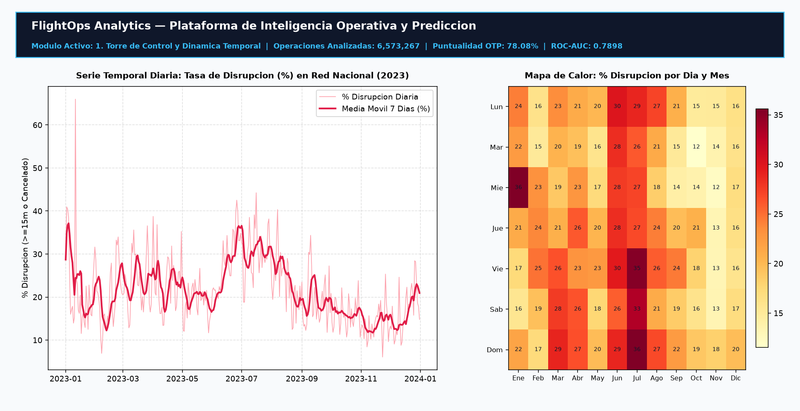

6,573,267 Flights
ROC-AUC 0.7898
85.2% Precision
-80% RAM (Parquet)
FlightOps Analytics — Medallion ETL & Air Traffic Disruption Predictor
Plataforma integral de ingenieria de datos (Arquitectura Medallon Bronce/Plata/Oro en Apache Parquet) sobre 6.57 millones de vuelos comerciales y 130,305 registros meteorologicos de EE. UU. Incluye clasificador causal sin fuga de datos (HistGradientBoosting, 70 variables pre-vuelo) y aplicacion web interactiva con 5 modulos y simulador operativo en tiempo real.
End-to-end data engineering platform (Bronze/Silver/Gold Medallion Architecture in Apache Parquet) over 6.57M US flights and 130,305 weather observations. Features a zero-leakage causal classifier (HistGradientBoosting, 70 pre-flight variables) and a 5-module interactive Streamlit web app with a live risk simulator.